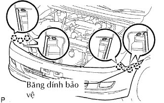
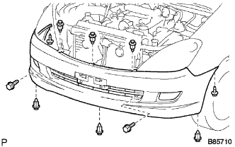

BA ĐỜ XỐC TRƯỚC > LẮP |
| 1. LẮP TĂNG CỨNG BA ĐỜ XỐC TRƯỚC |
Lắp tăng cứng bằng 4 đai ốc.
| 2. LẮP ĐỠ BÊN BA ĐỜ XỐC TRƯỚC TRÁI |
 |
Cài khớp 3 vấu để lắp đỡ bên.
Lắp 2 vít.
| 3. LẮP ĐỠ BÊN BA ĐỜ XỐC TRƯỚC PHẢI |
| 4. LẮP NẮP BA ĐỜ XỐC TRƯỚC |
|  |
Hãy dán băng dính bảo vệ phía dưới tai xe trước.
w/ Đèn sương mù:
Nối 2 giắc nối của đèn sương mù.
Cài khớp 6 vấu để lắp nắp.
|  |
Lắp 6 kẹp, 2 vít và 2 bulông.
| 5. LẮP BIỂU TƯỢNG TRÊN LƯỚI CHE KÉT NƯỚC |
Cài khớp 3 vấu để lắp biểu tượng.
| 6. LẮP LƯỚI CHE KÉT NƯỚC |
 |
Cài khớp 3 vấu để lắp lưới che két nước.
Lắp kẹp và 2 vít.
| 7. NỐI CÁP VÀO CỰC ÂM ẮC QUY |
| 8. TIẾN HÀNH THIẾT LẬP BAN ĐẦU |
Tiến hành thiết lập ban đầu (Xem trang Kích chuột vào đây).
| 9. KIỂM TRA ĐÈN CẢNH BÁO SRS |
Kiểm tra đèn báo SRS (Xem trang Kích chuột vào đây).